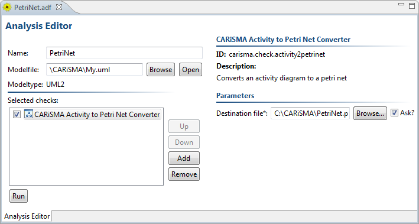
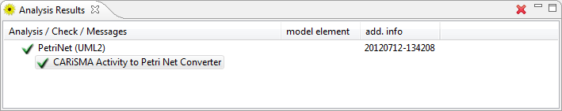

This plug-in converts an UML2 activity diagram to a Petri net, using a triple-graph grammar defined in [1]. To do this, create a new activity diagram or open an existing one. Afterwards create a new CARiSMA analysis for the model. Add the check Activity to Petri Net Converter and provide the destination file parameter, i.e. the file name and path of the to-be-converted petri net. The file should end with the file extension .pnml. Click Run to start the conversion.
The Analysis Results View will display whether the conversion was successful and the file path of the exported Petri net (detailed report).
[1] A. Spiteri Staines: A Triple Graph Grammar Mapping of UML 2 Activities into Petri Nets, INTERNATIONAL JOURNAL OF COMPUTERS, Issue 1, Volume 4, 2010